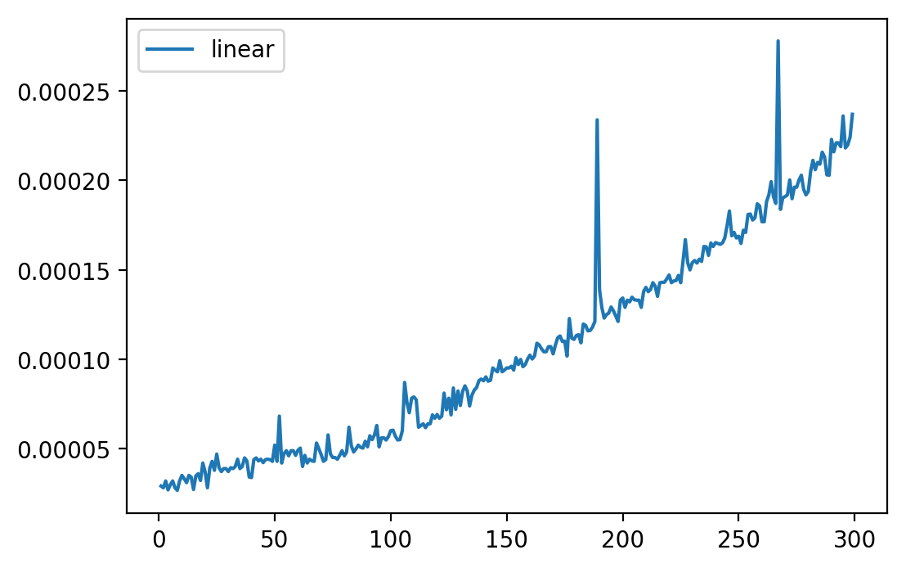

L’entrega conté :
Com s’ha realitzat la pràctica :
Tots els algoritmes ques es sol·liciten als diferents exercicis estan distribuïts en fitxers python. En general s’ha intentat fer un fitxer per exercici peró en alguns casos s’han agrupat diferens algoritmes dins d’un fitxer per mantenir la coherència en la implementació.
El programa de proves està executat directament dins de l’informe, s’utilitza el software pweave. S’utilitza un compilador de markdown que té la capacitat d’executar codi en python. Aquest compilador es pot trobar a la pàgina web de l’autor : http://mpastell.com/pweave/.
Mínims que es requereixen en el fitxer
Carreguem les llibreries
import os
import sys
sys.path.append(os.getcwd())
import time
import matplotlib.pyplot as plt
import numpy as npGenerador de nombres
Per poder generar nombres amb un tamany prou gran com per provar els diferents algoritmes s’han realitzat un parell de funcions que ens ho permeten. Aquestes funcions es poden trobar al fitxer utils.py.
## Enunciat 2-a
L’algoritme d’euclides està imlementat al fitxer euclides.py d’aquest mateix directori.
En aquest exemple es generaran nombres de xifres significants per testejar l’algoritme.
from utils import generateRandomValue
from euclides import euclides
size = []
times = []
i = 1000
counter = 0
while i < 50000:
# Generem dos nombres aleatoris amb llargada i
a = generateRandomValue(i)
b = generateRandomValue(i)
# Generem una variable on hi desem el codi que executarem per poder calcular el temps.
start = time.time()
euclides(a, b)
elapsed_time = time.time() - start
size.append(i)
times.append(elapsed_time)
i += 2000Generem 25 valors d’entre 1000 a 50000 nombres escalant 2000 xifres per cada valor. Generem el gràfic amb els valors esmentats i els temps de càlcul en funció del nombre de xifres dels valors generats. A la part esquerra dels gràfic hi trobem el temps d’execució en segons mentre que a la part inferior el nombre de xifres que tenen els valors que se li passen a la funció euclides.
{#3 }